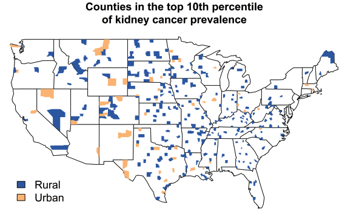
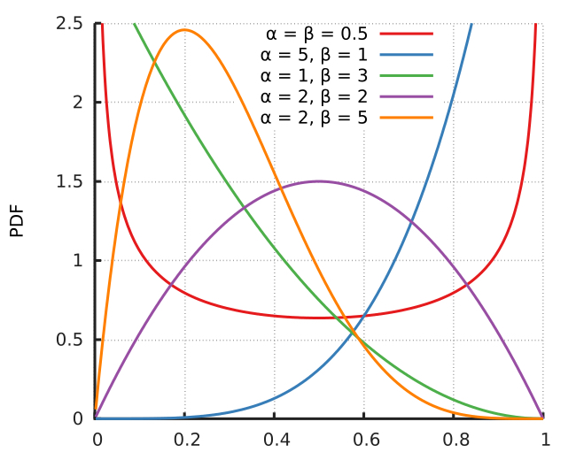
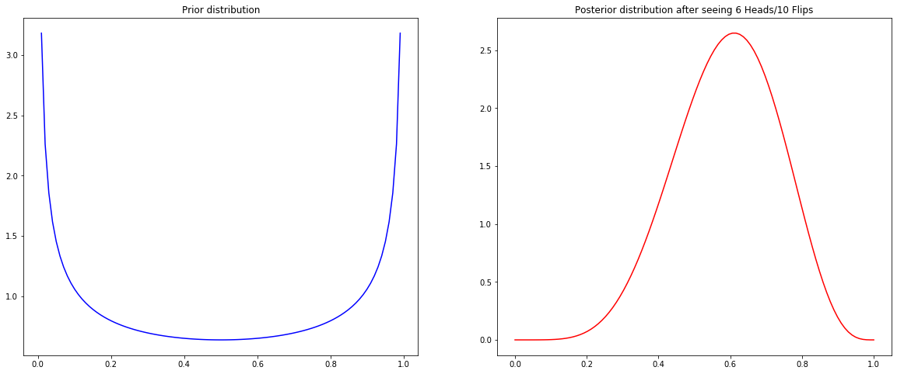
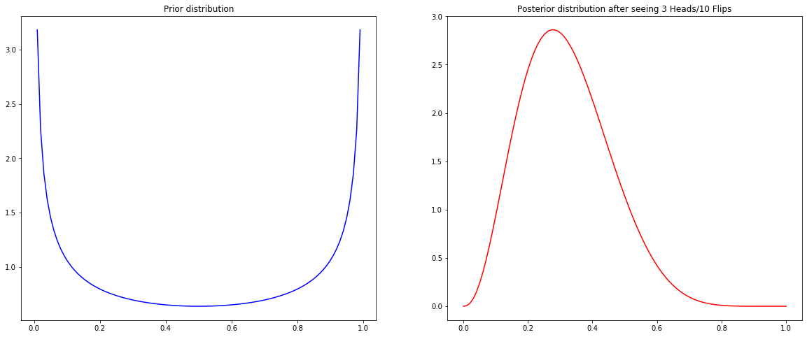
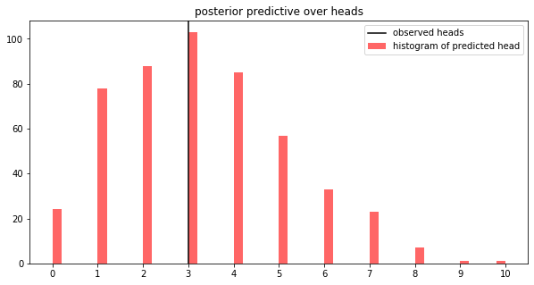
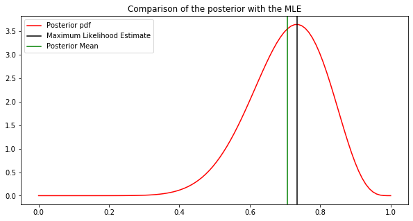

3. Bayesian Modeling#
This chapter is adapted from AM207 (Harvard, Fall 2021). Watch the recorded lecture.
In this chapter
Review of the Method of Maximum Likelihood
Models for Real Data
The Beta-Binomial Model
Bayesian Modeling
Connections and Comparisons with Frequentist Inference
3.1. Review of the Method of Maximum Likelihood#
The Method of Maximum Likelihood#
(Model) Assume observations from \(N\) number of independently and identically distributed outcomes, \(Y_1, \ldots, Y_N\), with \(Y_n \sim p(Y|\theta)\) and where \(\theta\) is the set of parameters of the distribution \(p(Y|\theta)\). The likelihood function is
\[\begin{aligned} \mathcal{L}(\theta) = \prod_{n=1}^N p(y_n | \theta) \end{aligned}\](Inference) We estimate \(\theta\) using the maximium likelihood estimate, defined as
\[\begin{aligned} \theta_{\text{MLE}} = \underset{\theta}{\mathrm{argmax}}\; \mathcal{L}(\theta) = \underset{\theta}{\mathrm{argmax}}\; \prod_{n=1}^N p(y_n | \theta) \end{aligned}\](Inference Method)
Unconstrained Optimization: if \(\theta\) doesn’t need to satisfy any special property, then it’s as simple as setting the gradient of the likelihood equal to zero and solving! (Except it’s not that simple!)
Constrained Optimization: if \(\theta\) needs to satisfy special properties, then it’s as simple as setting the gradient of the Lagrangian of the likelihood and the constraint equal to zero and solving! (Except it’s not that simple!)
Evaluating the MLE#
If we have the true parameters \(\theta\), we can compute the Mean Squared Error:
If we don’t have the true parameters \(\theta\), we can use \(\theta_{\text{MLE}}\) predict or simulate data and compare it with the observed data, i.e. sample
compare \(Y^{\theta_{\text{MLE}}}\) and \(Y^{\theta}\).
Properties of The Maximum Likelihood Estimator#
Why Choose MLE? Asymptotically, i.e. given an infinite number of samples, the MLE is
Consistent: \(\theta_{\text{MLE}}\) approaches the true parameters \(\theta\).
Unbiased: The average \(\theta_{\text{MLE}}\), taken over many different samples of the data, is \(\theta\).
Minimum Variance: The MLE has the lowest variance of all unbiased estimators.
Why Not Choose MLE? When the sample size is “small”, the MLE can be
Overfitted: The MLE can is sensitive to outliers in the data.
Biased: The average \(\theta_{\text{MLE}}\), taken over many different data samples, is not \(\theta\).
Imprecise: The MLE can have high variance.
What Other Estimators are There?
Method of Moments
Minimum Variance Unbiased Estimator
Regularized MLE
Note: the computation of (1) and (2) can be much more complex than MLE.
Is Bias Always Bad?#
Recall that we can use the properties of expectations to decompose the mean squared error of the maximum likelihood estimator:
Although we want an unbiased estimator, the above decomposition says that if the variance of the estimator is high our espected error will nonetheless be high.
The variance-bias trade-off refers to the phenomenon that, in many cases, when estimators have low bias they have high corresponding variance (and vice versa), and hence high MSE.
Going deeper: Decomposition of MSE
Example of the Bias Variance Trade-off Let \(Y \sim\mathcal{N}(0, \sigma^2)\). Consider two estimators of the variance \(\sigma^2\):
\(\widehat{\theta}_1(Y) = Y^2\)
\(\widehat{\theta}_2(Y) = \frac{1}{3}Y^2\)
The expected values of the estimators are:
\(\mathbb{E}[\widehat{\theta}_1] = \mathbb{E}[Y^2]=\sigma^2\), using the fact \(Y^2\) is a Gamma distribution with mean \(\sigma^2\).
\(\mathbb{E}[\widehat{\theta}_1] = \mathbb{E}[Y^2]=\frac{1}{3}\sigma^2\) So we see that \(\widehat{\theta}_1\) is unbiased, whereas \(\widehat{\theta}_2\) is biased.
Note that the two estimators are both of the form \(cY^2\) where \(c\) is a constant. We can compute the MSE, in a general way, for this class of estimators:
From the expression of the MSE, we can find the \(c\) that will minimize \(\mathrm{MSE}_{\widehat{\theta}}\) - this involves finding the stationary points of the derivative of \(\mathrm{MSE}_{\widehat{\theta}}\) (and then checking concavity/convexity!):
We see that \(\mathrm{MSE}_{\widehat{\theta}}\) has a unique global minimum at \(c = \frac{1}{3}\). That is, the biased estimator \(\widehat{\theta}_2\) has smaller MSE than the unbiased estimator \(\widehat{\theta}_1\).
Limitations of MLE: Overfitting Under Scarcity of Data#
Suppose that we have three observations from a Bernoulli distribution, \(Ber(\theta)\): \(\{ H, H, H\}\). From what we’ve see before, the MLE of \(\theta\) is
Suppose that we have two YouTube videos with 4/5 likes and 3,500/5,000 likes respectively. We can model the probability that a viewer will like each video as two Bernoulli distribtutions, \(Ber(\theta_1)\), \(Ber(\theta_2)\), where \(\theta_i\) is the “inherent” likeability of each video.
Again, we can compute the MLE of the Bernoulli parameters:
It is fair to say that the second video is more likeable base on our estimates?
Regularization#
We can prevent MLE from overfitting to the observations when training data is scarce by constraining it from unreasonable values.
Recall that in order to prevent the MLE solution for linear regression from learn unrealistically large slopes and intercepts, we add \(\ell_2\)-regularization on the model parameters during training, essentially forcing the parameters to stay as small (close to zero) as they can be while still capturing the data.
Similarly, if want the MLE of the parameter \(\theta\) of a Bernoulli distribution to avoid extreme values (1 and 0), we need to ‘anchor’ our estimation of \(\theta\) to some ‘reasonable’ value:
The fraction \(\alpha/\beta\) expresses your notion of what is a reasonable looking probability.
But is regularization a principled way to perform inference (i.e. will it ruin the nice properties of MLE)? How do you choose the hyperparameters \(\alpha\), \(\beta\) in a principled manner?
3.2. Models for Real Data#
Going deeper: Die Roll
We can model the outcome, \(Y\), of a single dice roll with a categorical distribution,
where \(\theta = [\theta_1 \ldots \theta_6]\) is a vector satisfying \(\sum_{i=1}^6 \theta_i = 1\), and where \(\theta_i\) is the probability of rolling a number \(i\).
Given \(Y_1,\ldots, Y_N\) identically and independently distributed outcomes with \(Y_n \sim Cat(\theta)\). Denote the total number observed for each face as a vector \(F = [f_1 \ldots f_6]\), where \(f_i\) is the number of times the number \(i\) was rolled. Then \(F\) can be modeled with a multinomial distribution,
Model Critique: What are the assumptions made in this model? Are they realistic?
Video Ranking#
We can model the outcome, \(Y\), of a user rating for a specific YouTube video as a Bernoulli distribution,
where \(\theta\) is the probability that a user will like the video.
Given \(Y_1,\ldots, Y_N\) identically and independently distributed outcomes with \(Y_n \sim Ber(\theta)\). Denote the total number of likes by \(L\). Then \(L\) can be modeled with a binomial distribution,
Model Critique: What are the assumptions made in this model? Are they realistic?
Kidney Cancer Rates#
Given a dataset with \(N\) number of US counties and the incidents of kidney cancer in each county, we can model the observed incidents of cancer, \(C_n\), of the \(n\)-th county with a Poisson distribution,
where \(T_n\) is the total population of the county and \(\theta_n\) is the “true” cancer rate of the county.
Model Critique: What are the assumptions made in this model? Are they realistic?
The following is a visualization of the counties with the highest rates of kidney cancer (Gelman 1998). Is there any noticeable spatial pattern in these maps? Recall that the MLE of the rate of the Poisson distribution for each county is \(\frac{C_n}{T_n}\).


Birth Weights#
In our lab, we work with IVF clinics to build models for prediction and data analysis. One of our current tasks is to model the birth weights of the infants born in the clinic.
Naively, given observed birth weights \(Y_1, \ldots, Y_N\), we can model each outcome \(Y_n\) with a normal distribution,
where \(\mu\) is the average birth weight for this population and \(\sigma^2\) is the population variance.
Model Critique: What are the assumptions made in this model? Are they realistic?
3.3. The Beta-Binomial Model#
The Coin Toss Model: Revisited#
Suppose that we have three observations from a Bernoulli distribution, \(Ber(\theta)\): \(\{ H, H, H\}\). The MLE of \(\theta\) is
Last time, you’d suggested tying the estimate to some fixed reasonable number, for example,
Question: What is the effect of \(\alpha\), \(\beta\) on our estimate? What values should we choose for \(\alpha\), \(\beta\)?
Incoporating Prior Beliefs#
Our choise of the regularization terms, \(\alpha\), \(\beta\), depends on our prior beliefs about the coin. The way we chose to incorporate these beliefs doesn’t indicate any uncertainty.
Alternatively, we can incorporate our prior belief about \(\theta\) as a distribution, this is called the prior distribution. Since \(\theta\) is a number between 0 and 1, a beta distribution is an appropriate choice.


The Beta-Binomial Model#
A model that involves both a likelihood for the data and prior on the parameters in the likelihood is called a Bayesian model.
Bayesian Model for Coin Flip
where \(\alpha, \beta\) are called hyperparameters of the model.
Now, computing the MLE no longer makes sense (since the MLE only considers the likelihood). Luckily, Bayes’ Rule allows us to derive a distribution that considers both the prior and the likelihood:
The distribution \(p(\theta | Y)\) is called the posterior.
Posterior for the Beta-Binomial Model#
In our case, the posterior is given by
where \(const = \frac{{N \choose Y}}{B(\alpha, \beta)p(Y)}\) must be the normalizing constant for \(p(\theta | Y)\).
We recognize the posterior as a beta distribution, \(Beta(Y+\alpha, N-Y + \beta)\)! Can you see why?
Interpreting the Posterior: Bayesian Update#
Rather than a point estimate for \(\theta\), we now have a posterior distribution, \(p(\theta|Y)\), over \(\theta\). What does the posterior tell us about \(\theta\)?
Since the prior distribution \(p(\theta)\) encoded our beliefs about \(\theta\) along with our uncertainty, it is natural to interpret the posterior as yet another belief about \(\theta\).
Since the posterior includes the likelihood, this belief has been updated by the data.
Simulation: Bayesian Update for the Coin Flip#
What is the effect of the choice of the prior on the posterior? What is the effect of the number of observations, \(N\), on the posterior?
fig, ax = plt.subplots(1, 2, figsize=(20, 8))
ax = plot_prior_posterior(ax, prior, posterior, H, N)
plt.show()


Making Predictions#
If the posteriors we infer represent beliefs, how do we evaluate these beliefs?
In the case that we the true parameter \(\theta^{\text{true}}\), we can check to see if the posterior assigns high likelihood to \(\theta^{\text{true}}\), and the certainty the posterior has around \(\theta^{\text{true}}\).
When we do not know \(\theta^{\text{true}}\), we can simulate data \(Y^{\theta}\) using samples of \(\theta\) from the posterior. We compare the distribution of simulated data, or posterior predictive, to the observed data.
Simulation: Posterior Predictive for the Coin Flip#
posterior_samples = np.random.beta(posterior_alpha, posterior_beta, size=500)
posterior_pred = [np.random.binomial(N, theta_sample, 1)[0] for theta_sample in posterior_samples]
fig, ax = plt.subplots(1, 1, figsize=(10, 5))
ax = plot_posterior_predictive(ax, posterior_pred, H)
plt.show()

3.4. Bayesian Modeling - A Summary#
The Bayesian Modeling Process#
In order to make statements about \(Y\), the outcome, and \(\theta\), parameters of the distribution generating the data, we form the joint distribution over both variables and use the various marginals/conditional distributions to reason about \(Y\) and \(\theta\).
we form the joint distribution over both variables \(p(Y, \theta) = p(Y | \theta) p(\theta)\).
we can condition on the observed outcome to make inferences about \(\theta\),
\[ p(\theta | Y) = \frac{p(Y, \theta)}{p(Y)} \]where \(p(\theta | Y)\) is called the posterior distribution and \(p(Y)\) is called the evidence.before any data is observed, we can simulate data by using our prior
\[ p(Y^*) = \int_\Theta p(Y^*, \theta) d\theta = \int_\Theta p(Y^* | \theta) p(\theta) d\theta \]where \(Y^*\) represents new data and \(p(Y^*)\) is called the prior predictive.after observing data, we can simulate new data simliar to the observed data by using our posterior
\[ p(Y^*|Y) = \int_\Theta p(Y^*, \theta|Y) d\theta = \int_\Theta p(Y^* | \theta) p(\theta | Y) d\theta \]where \(Y^*\) represents new data and \(p(Y^*|Y)\) is called the posterior predictive.
Evaluating Bayesian Models#
As we have seen in the Beta-Binomial model, we can simulate the posterior (and prior) predictive rather than compute them analytically. That is, you don’t need to know the pdf of \(p(Y^*|Y)\).
The posterior predictive can be represented by samples of predictions:
we sample values of \(\theta_n\) from the posterior, \(p(\theta|Y)\).
we sample an outcome \(Y_n\) from \(p(Y|\theta_n)\) for each posterior sample \(\theta_n\).
The set \(Y_n\) we obtain emprirically represents the posterior predictve distribution \(p(Y^*|Y)\).
Going deeper: Aside
How do we evaluate the quality of our Bayesian model: how appropriate was our choice of prior? How appropriate was our choice of noise structure for the data (i.e. how appropriate is our choice of likelihood)?
Evaluating Bayesian models is challenging for two reasons:
Instead of learning a single best estimate of the model parameters \(\theta\), like in the case of maximum likelihood estimation, we learn a distribution over possible values of \(\theta\), \(p(\theta|Y)\)
In real life we do not have access to the ground truth values of model parameters
Thus, we evaluate our model by seeing how well it fits the observed data. That is, we check to see how well our predicted distribution of \(Y^*\), \(p(Y^* | Y)\), matches up with the observed data \(Y^*\).
When we are able to visualize the data (i.e. when \(Y^*\) is low-dimensional), we can visualize both data \(Y^*\) and samples from \(p(Y^* | Y)\). If the model is a good fit for the data, these two plots should be similar.
But what if it’s not possible to visualize the data?
Where do Priors Come From?#
Hopefully you’ve noticed a key property of the priors we chose:
All the priors combined with the likelihood to form a distribution we recognize! Specifically, the posterior distribution is of the same type as the prior!
These priors are called conjugate priors for the corresponding likelihoods. This is a purely mathematical property.
Question: is it right to choose priors that are mathematically convenient? What is a good way to choose a prior? What if we “choose wrong”?
Going deeper: Uninformative Priors: How to Say I Don’t Know
If you don’t have a strong prior believe about the parameters in the likelihood, you should choose a prior that has no effect when combined with the likelihood – i.e. let the data speak for itself.
Example: In the Beta-Binomial model, is there a choice of the hyperparameters of the prior that has no effect on the posterior?
We might try \(Beta(1, 1)\), which is the uniform distribution over \([0, 1]\). The posterior \(p(\theta|Y)\) is then \(Beta(Y + 1, N - Y + 1)\). In the following example, visualizing the posterior, we see that the posterior assigns the highest mass to the MLE of \(\theta\). But the posterior assigns more mass to values of \(\theta\) smaller than the MLE. In this sense, the prior does inform the posterior.

Going deeper: Aside
There is a general purpose technique for creating non-informative priors, called Jeffreys priors, which places less prior weight on parameter values where the likelihood function is flat. This prevents the prior from having undue influency on the posterior.
There are many resources that cover the construction of Jeffreys priors for common likelihoods.
3.5. Summary#
How do we evaluate the fit of our MLE model?
With regression it’s easy, you plug \(x_n\) into \(f_{\theta_\text{MLE}}(x)\) and then compare the prediction \(\widehat{y}_n\) with \(y\). But what if we don’t have any inputs, \(x_n\), what if we just have \(y_n\)? In this case we would not be able to predict a \(\widehat{y}_n\) for a specific \(y_n\).
What are the potential drawbacks of MLE (in particular, under data scarcity)?
What are some common fixes for the drawbacks of MLE?
What are some potential issues with these fixes?
What is the point of adding priors to our models? Specifically how does adding priors to our model mitigate some of the drawbacks of MLE?
How should we interpret the posterior of a Bayesian model and why?
What is a posterior predictive? What is the relationship between the posterior predictive and the posterior? What is the point of deriving the posterior predictive (i.e. once we derive the posterior isn’t that enough)?
How do we evaluate a Bayesian model (the posterior is a distribution over plausible models not a single “best” model)?
How do we choose priors for Bayesian models? What if we chose wrong? Why did we choose a Beta prior for the binomial model for the coin flip data?
3.6. Exercises#
These problems were originally assigned as homework. Data files are in the book’s data/ folder.
Problem Set: Review of Statistical Modeling and Scientific Computing#
Problem Description#
In the competitive rubber chicken retail market, the success of a company is built on satisfying the exacting standards of a consumer base with refined and discriminating taste. In particular, customer product reviews are all important. But how should we judge the quality of a product based on customer reviews?
On Amazon, the first customer review statistic displayed for a product is the average rating. The following are the main product pages for two competing rubber chicken products, manufactured by Lotus World and Toysmith respectively:
Lotus World | Toysmith
| - |
Clicking on the ‘customer review’ link on the product pages takes us to a detailed break-down of the reviews. In particular, we can now see the number of times a product is rated a given rating (between 1 and 5 stars).
Lotus World | Toysmith
| - |
In the following, we will ask you to build statistical models to compare these two products using the observed rating. Larger versions of the images are available in the data set accompanying this notebook.
Exercise: Part I: A Maximum Likelihood Model
(Model Building) Suppose that for each product, we can model the probability of the value each new rating as the following vector:
\[ \theta = [\theta_1, \theta_2, \theta_3, \theta_4, \theta_5] \]where \(\theta_i\) is the probability that a given customer will give the product \(i\) number of stars. That is, each new rating (a value between 1 and 5) has a categorical distribution \(Cat(\theta)\). Represent the observed ratings of an Amazon product as a vector \(R = [r_1, r_2, r_3, r_4, r_5]\) where, for example, \(r_4\) is the number of \(4\)-star reviews out of a total of \(N\) ratings. Write down the likelihood of \(R\). That is, what is \(p(R| \theta)\)?
Note: The observed ratings for each product should be read off the image files included in the dataset.
(Model Fitting) Find the maximum likelihood estimator of \(\theta\) for the Lotus World model; find the MLE of \(\theta\) for the Toysmith model. You need to make a reasonably mathematical argument for why your estimate actually maximizes the likelihood (i.e. recall the criteria for a point to be a global optima of a function).
Note: I recommend deriving the MLE using the general expression of the likelihood. That is, derive the posterior using the variable \(R\), then afterwards plug in your specific values of \(R\) for each product.
(Model Interpretation) Based on your MLE of \(\theta\)’s for both models, do you feel confident deciding if one product is superior to another? Why or why not?
Exercise: Part II: A Bayesian Model
(Model Building) Suppose you are told that customer opinions are very polarized in the retail world of rubber chickens, that is, most reviews will be 5 stars or 1 stars (with little middle ground). What would be an appropriate \(\alpha\) for the Dirichlet prior on \(\theta\)? Recall that the Dirichlet pdf is given by:
\[ p_{\Theta}(\theta) = \frac{1}{B(\alpha)} \prod_{i=1}^k \theta_i^{\alpha_i - 1}, \quad B(\alpha) = \frac{\prod_{i=1}^k\Gamma(\alpha_i)}{\Gamma\left(\sum_{i=1}^k\alpha_i\right)}, \]where \(\theta_i \in (0, 1)\) and \(\sum_{i=1}^k \theta_i = 1\), \(\alpha_i > 0 \) for \(i = 1, \ldots, k\).
(Inference) Analytically derive the posterior distribution (using the likelihoods you derived in Part I) for each product.
Note: I recommend deriving the posterior using the general expression of a Dirichelet pdf. That is, derive the posterior using the variable \(\alpha\), then afterwards plug in your specific values of \(\alpha\) when you need to.
(The Maximum A Posterior Estimate) Analytically or empirically compute the MAP estimate of \(\theta\) for each product, using the \(\alpha\)’s you chose in Problem 1. How do these estimates compare with the MLE? Just for this problem, compute the MAP estimate of \(\theta\) for each product using a Dirichelet prior with hyperparameters \(\alpha = [1, 1, 1, 1, 1]\). Make a conjecture about the effect of the prior on the difference between the MAP estimates and the MLE’s of \(\theta\).
(The Posterior Mean Estimate) Analytically or empirically compute the posterior mean estimate of \(\theta\) for each product, using the \(\alpha\)’s you chose in Problem 1. How do these estimates compare with the MAP estimates and the MLE?
(The Posterior Predictive Estimate) Sample 1000 rating vectors from the posterior predictive for each product, using the \(\alpha\)’s you chose in Problem 1. Use the average of the posterior predictive samples to estimate \(\theta\). How do these estimates compare with the MAP, MLE, posterior mean estimate of \(\theta\)?
(Model Evaluation) Compute the 95% credible interval of \(\theta\) for each product (Hint: compute the 95% credible interval for each \(\theta_i\), \(i=1, \ldots, 5\)). For which product is the posterior mean and MAP estimate more reliable and why?
Exercise: Part III: Broader Impact Analysis
Starting in 2020, major machine learning conferences are beginning to ask authors as well as reviewers to explicitly consider the broader impact of new machine learning methods. To properly evaluate the potential good or harm that a piece of technology (AI or not) can do to the general public, we need to be aware that no technology is deployed in ideal conditions or in perfectly neutral contexts. In order to assess the potential broader impact of technology, we need to analyze the social systems/institutions of which these technologies will become a part.
To help you analyze the broader impact of your technology, begin by considering the following questions:
I. Identify the relevant socio-technical systems
In what social, political, economic system could the tech be deployed?
How would the tech be used in these systems (what role will it take in the decision making processes)?
II. Identify the stakeholders
Who are the users?
Who are the affected communities (are these the users)?
Hint: users are typically decision makers who will use the technology as decision aids (e.g. doctors), whereas affected communities may be folks who are impacted by these decisions but who are not represented in the decision making process (e.g. patients).
III. What types of harm can this tech do?
What kinds of failures can this tech have?
What kinds of direct harm can these failures cause?
What kinds of harm can the socio-technical system cause?
Hint: many technical innovations have niche applications, they may sit in a long chain of decision making in a complex system. As such, it may seem, at first glance, that these technologies have no immediate real-life impact. In these cases, it’s helpful to think about the impact of the entire system and then think about how the proposed innovations aid, hamper or change the goals or outcomes of this system.
IV. What types of good can this tech do?
What kinds of needs do these users/communities have?
What kinds of constraints do these users/communities have?
(Impact) Analyze the broader impact of models of product popularity/quality when used for ranking. Specifically, focus on anticipating ways these models can interact with other components of the decision systems in which they will be deployed, identifying end-users, affected communities as well as anticipating the effects (positive and negative) on affected communities (in particular, does the model have the same effect on all subpopulations in the affected communities?).
(Comparison of Ranking Systems)
Recall that on Amazon, the first customer review statistic displayed for a product is the average rating. What is potentially problemmatic with ranking products based on the average customer rating?
Which point estimate (MAP, MLE, posterior mean or posterior predictive estimate) of \(\theta\), if any, would you feel choose to rank the two Amazon products? Why?
Hint: think about which of these estimates are equivalent (if any). If they are not equivalent, what are the special properties of each estimate? What aspect of the data or the model is each estimate good at capturing?
Note: we’re not looking for “the correct answer” here. We are looking for a sound decision based on a statistically correct interpretation of your models.
3.7. Further Reading#
Statistics
(Introductory) Philosophy and the practice of Bayesian statistics
(Introductory) The Exponential Family: Conjugate Priors
Other Reference
Gelman, Chapters 2 & 3
Gelman, Chapter 4